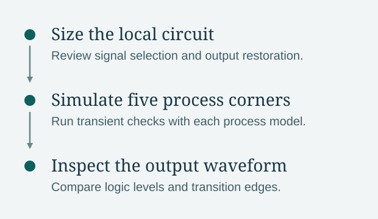
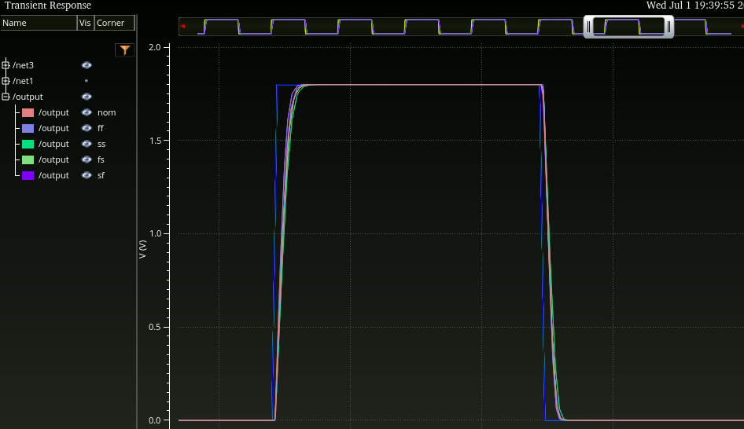

Reading a stochastic device with CMOS
A magnetic tunnel junction can fluctuate between resistance states. A p-bit circuit uses that fluctuation as a source of random bits. At Purdue’s NanoX Lab, I contributed to the local circuitry that selects a device signal and restores it to CMOS logic levels. One design question was whether the output would still switch cleanly as transistor characteristics varied across process corners.
Device modeling and local circuit design
I built a stochastic Verilog-A device model with literature-based parameters to give the analog designer a source of switching behavior for simulation. I also designed, simulated, and laid out MUX and inverter circuitry, and contributed to RTL debugging and timing analysis.


Output restoration across five process corners
I compared the high and low plateaus as well as the edges. Across the nominal, FF, SS, FS, and SF simulations, the output swings from approximately 0 V to 1.8 V. The rising edges separate visibly even when their high plateaus overlap. A plateau-only comparison would miss that sensitivity to the process model.

Project context
The collaborative chip design is in production at TSMC. My device transport experiments in Wang’s Thin Film Group are a separate project.